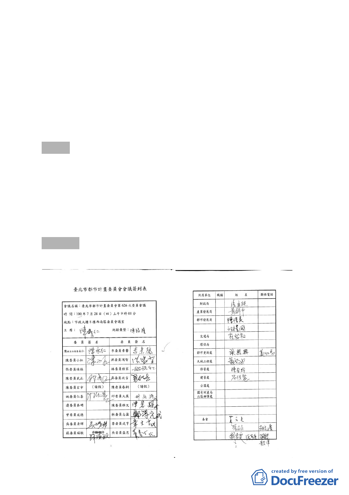

10013944500 號函就社會公益性與環境貢獻度提出說明，提會
續審。
五、申請單位：潘爰儒。
六、辦理單位：臺北市政府。
七、法令依據：都市計畫法第 66 條、都市更新條例第 5、6、8、
11 條及臺北市都市更新自治條例第 15 條。
八、本更新單元劃定經市府審查符合「臺北市都市更新自治條例」
劃定基準及環境評估標準。
決議：
一、 本案更新單元劃定範圍照案通過。
二、 因本案鄰近捷運車站，為創造舒適人行環境，更新單元北側、
東側及南側均須退縮留設 4 公尺以上無遮簷人行道，且街角
皆應留設開放空間供公眾使用，以增公益性。
伍、散會（12：00）
- 33 -